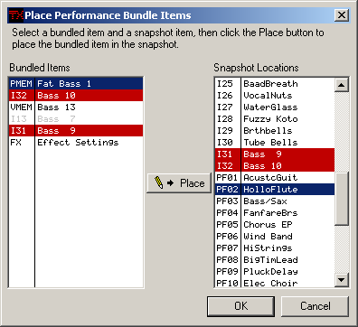

Performance Bundles
A performance bundle is a way to keep a performance and all its dependents
together in one library item. To create a bundle, select a performance in the
snapshot and click one of the
bundle buttons. The program
will take the performance, its voices, its effects if it uses them, and the
octave user microtunings table or the full keyboard table if it uses one of
them, and it will pack all of these into one item.
To unpack a bundle, you can double-click on it in the library list, or select
it and click the Copy
Items From Lib button in the snapshot area. This will bring up the
Place Performance Bundle Items dialog box.

You can use this to select which items to copy and where you want to copy
them into the snapshot. The items that are contained in the bundle appear in
the left list box and the valid locations where items can be copied to the
snapshot appear on the right.
Placing Items
To place an item, select it on the left and select its destination on the
right and, if the destination is valid, the Place button will become
enabled. Click it to place the item. The type of the bundled item will change
to the location where it will be placed and the items on both sides of the
placements are painted red.
Removing Placements That You've Made
If you change your mind about a placement, you can click on both items again
and the button in the middle will turn into an Unplace button. Click
it to remove the placement.
Grayed Items
When you open this window, it will scan the snapshot to see if any of the
items in the bundle already exist in the snapshot. If so, it will gray out the
item and change the type to the location of the duplicate item in the snapshot.
Doing The Actual Copying
Nothing is copied while you're doing all this placing and unplacing. When you
click the Ok button, then whatever items you have placed are copied into the
snapshot. You don't have to place all items if you don't want to.
When Items Are Transmitted To The TX81Z
Unbundling items won't automatically transmit them to the TX81Z. In order to
send bank items to the TX81Z, you have to send the entire bank, so I didn't
think it was a good idea to do this automatically. If you want to transmit the
items, use the
Transmit Snapshot
Data button in the snapshot section of the main window.
About Valid Locations Where Items Can Be Unbundled
The item types in the bundle are library types,
so PMEM's are packed performances that can be unbundled into one of the
PF01..PF24 slots in the snapshot, and the VMEM's are packed voices that can be
unbundled into the I01..I32 slots.
You can't unbundle the PMEM into the PCED or a VMEM into the VCED. You
can create a bundle from the PCED, however.
About The Bundle Name
The name of the bundle is the same as the name of the performance, so if you
rename the bundle in the library list, the performance it contains will be
renamed.
About The Bundle Comment
When you create a bundle, the program will create a comment for it, which
gives a summary of what is contained in the bundle. I only did this for your
convenience — you can recomment a bundle with no ill effects.